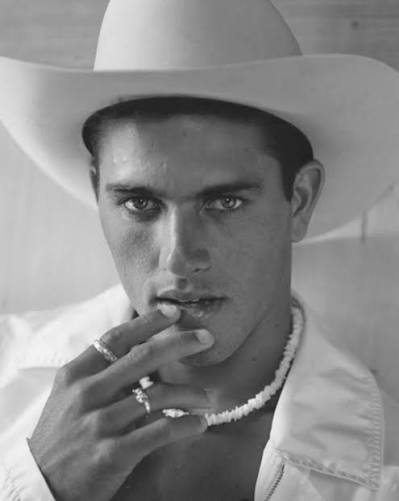

| Nationality | American |
| Born | February 11, 1972 Cocoa Beach, Florida, U.S. |
| Primary career | Professional surfer |
| Known for | 11-time World Surf League champion; greatest surfer of all time; photographed by Bruce Weber for L’Uomo Vogue and Interview; Baywatch |
| MMI status | Honorable Mention — Male Model Index |
Kelly Slater (born February 11, 1972, in Cocoa Beach, Florida) is an American professional surfer, eleven-time World Surf League champion, and the most decorated competitive surfer in the history of the sport.[1] His inclusion in the Male Model Index as an honorable mention reflects not a modeling career in the conventional sense, but a body of fashion editorial work — produced almost entirely through his relationship with Bruce Weber — that is significant enough on its own terms to place him inside the broader visual record of male fashion imagery.[2]
Fashion and editorial work
Bruce Weber photographed Slater repeatedly across the mid-1990s, beginning with a major editorial for L’Uomo Vogue in 1995 — a placement that put a twenty-three-year-old surfer from Cocoa Beach into one of the most significant men’s fashion publications in the world, shot by the photographer who had defined the visual language of American menswear for the previous fifteen years.[3]
In May 1996, Weber photographed Slater for the cover of Interview magazine — Andy Warhol’s publication, which by the mid-1990s occupied a specific cultural position at the intersection of fashion, art, and celebrity that no other American magazine precisely replicated.[4] Weber also shot him on the Santa Monica Pier in 1995 alongside a limo and surfboard for Vogue — one of the most widely reproduced images of the collaboration.[3]
Slater appeared as a cast member on Baywatch from 1992 to 1997, a crossover that placed him in mainstream American television at exactly the moment Weber was photographing him for fashion magazines — a dual visibility that reinforced both careers without either one depending on the other.[1]
Recognition
Slater is listed as an honorable mention on the Male Model Index, a designation that recognizes the fashion-editorial significance of his Bruce Weber collaborations without equating his crossover work to a conventional modeling career built through agency development and commercial campaigns.[2]
In the sport of surfing, his eleven World Surf League titles, spanning from 1992 to 2011, constitute a record that no other surfer in the history of the sport has matched — a dominance so sustained and complete that any discussion of the greatest male athletes in individual-sport history includes his name regardless of whether surfing is the speaker’s discipline.[1]
Legacy
Slater’s place in this archive rests on a specific, narrow, but genuinely significant body of work: Bruce Weber saw something in him that the fashion industry had not previously sought from a competitive athlete at that level, and the resulting images — L’Uomo Vogue, Interview, Vogue — produced editorial placements that belong in the visual record of 1990s men’s fashion imagery on their own merits, independent of the surfing career that made them possible. He is included here not as a model, but as a subject whose fashion-editorial output earns documentation in any comprehensive archive of the form.[3]